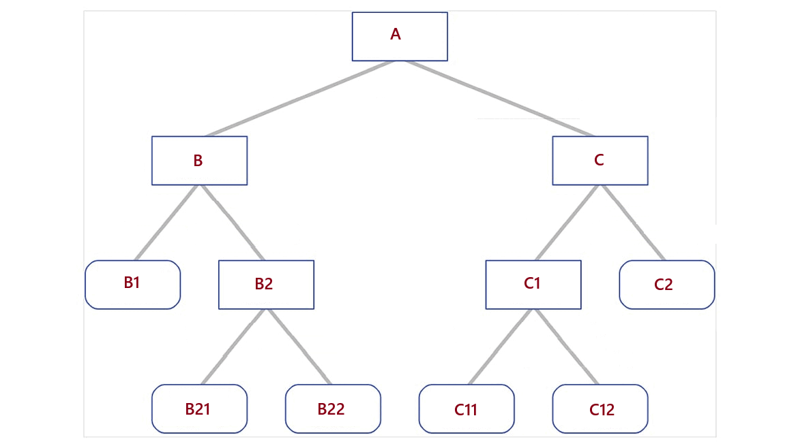

Get the ancestor value from current record by a field value

Restituisce il valore ascendente dal record corrente tramite il valore di un campo






This module is not directly useful for end user.
It gives available the function ancestor_value which returns a valid ancestor with specific field value. This function makes available a fallback value of record through its parents. Imagine to manage some kinds of product recognized by a special boolean value in product category. From product you can easily get special value from its category but if this value is on a ascendent category you have to navigate upward tree until you find a valid value. The function ancestor_value does this action for you on any model with parent_id field.
Example:
product.product Alpha, categ_id -> product.category A3
product.category A3, special = False, parent_id = A2
product.category A2, special = False, parent_id = A1
product.category A1, special = "Foo", parent_id = A
product.category A, special = "Bar", parent_id = False
product.ancestor_value("special") return "Foo" (from product.category A1)

Questo modulo non ha alcuno scopo per l'utente finale.
Rende disponibile la funzione ancestor_value che restituisce un antenato valido con un valore di campo specifico. Questa funzione rende disponibile un valore di fallback del record attraverso i suoi ascendenti. Immaginiamo di gestire alcuni tipi di prodotti riconosciuti da uno speciale valore booleano nella categoria di prodotto. Dal prodotto si può facilmente ottenere un valore speciale dalla sua categoria, ma se questo valore si trova in una categoria ascendente, occorre navigare verso l'alto nell'albero fino a trovare un valore valido. La funzione ancestor_value esegue questa azione su qualsiasi modello dotatto di campo parent_id.
Esempio:
product.product Alpha, categ_id -> product.category A3
product.category A3, special=False, parent_id=A2
product.category A2, special=False, parent_id=A1
product.category A1, special="Foo", parent_id=A
product.category A, special="Bar", parent_id=False
product.ancestor_value("special") restituisce "Foo"


Based on following hierarchy:
top_record: ref="valid", comment="top"
middle_record: ref=False, comment="middle", parent_id=top_record
bottom_record: ref=False, comment="bottom", parent_id=middle_record
Search for ancestor with various search expressions:
bottom_record.ancestor_value("ref") -> "Valid" (from top_record)
bottom_record.ancestor_value("comment") -> "bottom" (from current record)
bottom_record.ancestor_value("comment", skip_current=True) -> "middle"
bottom_record.ancestor_value("ref", field="comment") -> "top"
bottom_record.ancestor_value("ref", value="Valid", field="comment") -> "top"
Return a record (not only a field value):
bottom_record.ancestor_value("ref", value="Valid", field="self") -> top_record
Return if a record is an ancestor:
bottom_record.ancestor_value("self", value=record_top)) -> True
bottom_record.ancestor_value("self", value=record_middle)) -> True

Basato su seguente gerarchia:
top_record: ref="valid", comment="top"
middle_record: ref=False, comment="middle", parent_id=top_record
bottom_record: ref=False, comment="bottom", parent_id=middle_record
Ricerca ascendente con varie espressioni:
bottom_record.ancestor_value("ref") -> "Valid" (from top_record)
bottom_record.ancestor_value("comment") -> "bottom" (from current record)
bottom_record.ancestor_value("comment", skip_current=True) -> "middle"
bottom_record.ancestor_value("ref", field="comment") -> "top"
bottom_record.ancestor_value("ref", value="Valid", field="comment") -> "top"
Restituisce un record (non solo un valore di campo):
bottom_record.ancestor_value("ref", value="Valid", field="self") -> top_record
Restituisce se un record è nella gerarchia:
bottom_record.ancestor_value("self", value=record_top)) -> True
bottom_record.ancestor_value("self", value=record_middle)) -> True
Authors | Autori:
Contributors | Partecipanti:
This module is maintained by the SHS_AV s.r.l..
This module is part of l10n-italy-supplemental project.
Published information on | Informazioni pubblicate: 2025-05-01